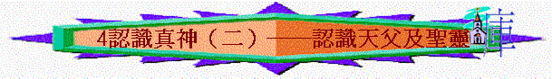

教師版
經文：約20:17、14:16-17
引言：我們在認識三位一體的奧秘後，我們要再進深的去看一看天父及聖靈與我們的關係。這使我們在成長中及經歷 神的事上極為重要。
A)認識天父
稱 神為「父」是主耶穌所啟示給我們的，又是藉著主耶穌的救贖及復活所帶來給我們的恩典，並在祂復活後所宣告的事實──我們有了兒子的地位。
我們這位父究竟是如何的一位父呢？
1)天上的父（太 5:48、6:9、32、7:11、23:9）
「天上」是表示祂與地上的父親不同，祂是養活萬物者，祂是真知道我們一切的需要的，並且祂供給我們一切所需要的。因我們為祂的兒女，兒女從父親得著所需是合理的事，地上的父親尚且知道將好東西留給兒女，何況我們在天上的父，豈不將更好及對我們有益的東西給我們麼？而且祂又是我們禱告的對象，祂用耐心來耹聽我們每一個禱告。要認識我們這位在天上的父，相信祂並倚靠祂，聖經應許畯怑n先求祂的國和祂的義，我們所需的這一切東西，天父必加給我們。
2)永活的父（約 6:57、5:26）
永活表示祂是永存及祂的神性，祂既是永活，祂對我們的看顧必不會停斷，我們可以放心 的來投靠在祂的蔭下。就算我們年老髮白， 神仍看顧保護我們，我們仍是祂的兒女。
3)榮耀的父（弗 1:17，徒 7:2）
榮耀是表明父神的尊貴，因祂是創造萬物者，為至高者，萬物都是在祂稞
下。例：君王在人民心中是尊榮的，與一般的平民是大有分別的。
4)聖潔的父（約 17:11、彼前 1:15、啟 4:8）
聖潔是 神的本性，是 神超越的特性，一切罪惡與不潔的事都與祂違背， 神一切的屬 性都與祂的聖潔一致，如 神的聖潔顯出 神的公義，有罪的必須面對 神的追討。
例：天使（撒拉弗）已是聖潔，但在聖潔的 神面前尚且要用四個翅膀遮身，用兩個翅膀來飛翔，因深感 神是至聖潔的，不配站立 神前。
5)公義的父（約 17:25）
公義為 神的性情，祂不會以有罪的為無罪，祂不會容讓不法的事，亦不會容讓不義的事。由 於父 神是公義的，祂因著主耶穌的救贖就看我們為無罪，不再追討我們的罪了。另外因 著我們與祂的關係，祂不能撇下我們不顧，祂必須施恩拯救，故 神的公義昔日對我們為 追討罪，但今日因主耶穌的緣故；成為我們得救的保障。但這亦告訴我們不應行惡，因這 是叫父 神難過的。
例：若我們明知父母不喜歡我們某些惡習，我們仍偏要行，那豈不是叫父母傷心嗎？
例：世人為賭博而求拜偶像，我們卻不可為賭博而求天父，因賭博是貪心的表現，貪心是罪，公義的父豈會助人犯罪呢？ 神有時彷彿「忘記」，但 神的公義使 神必不忘記。
例：如舊約的約瑟，他一生敬畏 神，但遭遇不如意事，彷彿 神沒有看顧，在後來的事看到神沒有忘記他，反是一直的帶領他，並為保守他及他全家的牲命而早作出安排。
6)慈悲的父（林後 1:3，詩 145:8-9）
慈悲亦為神的性情，父神不會任讓我們在難處中受苦而不顧，祂是不甘心讓我們白白受苦，我們所遇見的難處必定是對我們有益處，並且必定要施恩使我們得著幫助。
例：父母讓兒女在學行的過琵中，會讓他們的兒女經歷跌倒，但卻不會讓他們受傷太過。
不是父母不愛他們的兒女，而是要他們學習成長。若兒女不能站立，父母會幫助他們站立，在行走時雖有驚恐，但必沒意外，因父母必會幫助及看顧。
7)萬靈的父（來 12:9）
這告訴我們 神是萬物的創造者，萬有都是從祂而來的。有時我們在地上會走差路，犯罪行惡得罪 神， 神會為著我們的屬靈益處而施行管教的，免得我們沉淪在罪惡中。
當然受管教時是不快樂，但在事後卻看出 神的苦心及美意，又使人在 神的聖潔上有份。
例：大衛雖是神所喜悅的人，但他犯了罪， 神也沒有辜釋他， 神將他的罪行顯露來，目的為使大衛回頭，重新在 神的手中有用。
B)認識聖靈
聖靈又稱神的靈，又作基督的靈，是說明聖靈與父及子的關係，也說明其神性。在舊約當中不是每一個屬 神的子民都有聖靈在身上，乃是個別重要的領袖人物才有聖靈，並且聖靈不是長久在他們身上，乃為因應工作需要而降縷在他們身上，是短暫性的存留。並且是可以失去聖靈的同在，這與新約當中聖靈在信徒身上的關係是斷然不同的，我們有聖靈是因救恩 的綠故，並且聖靈在我們身上不是暫居，乃是永遠與我們同在，作為我們得基業的憑據。主 耶穌介紹聖靈時，稱祂作保惠師，其意思是「被叫來在旁施予幫助的一位」，祂是代表主耶 穌給與我們幫助。而聖靈的幫助為多方面，我們可以簡單列出下列幾點來看一看：
1)
重生（約 3:5-6、多 3:5）因為人是死在過犯罪惡中，惟有聖靈能叫人活過來。重生就是賜與新生命，聖靈是使我們在屬靈上得到新生命。聖靈帶來新生命是藉著 神的話語的工作(彼前 1:22)。重生使人於神的性情上有份(彼後 1:4) 。重生是一霎時之間成就的事，有時人自己卻不覺得，但終必知曉。
2)
印證（弗 1:13-14，林後 1:22）聖靈在我們得救的人身上，是要作印證。祂是長久住在我們身上，保證我們有 神兒子的地位，及證明 神的應許O真實的。印記是表明所印是真的，又告訴人所印是屬誰的，並使受印的人穩固。
例：商品都有註冊商標，這是產品的一種保證，證明產品是原廠出品，有品質保證，使買的人可以安心相信。
3)
引導（羅 8:14、加 5:25）聖靈常會引導信徒過聖潔的生活，並且是按聖經的教訓來引導人。但我們必須順服聖靈的引導，否則我們仍是得不著益處。
例：當我們想犯罪時，聖靈必定在我們心中作提醒，若我們按聖靈的心意而行必可以勝過罪惡，但若體自己，就必落入罪惡中。
4)
教導（約 16:12-15、14:26）聖靈來為引導我們明白真理，並且是進入真理的實際中，不是頭腦上的知道，乃是經歷及實踐真理。
例：知道親近神有益與切實的與 神相交和有親密的靈修生活是不同的。聖靈又常常使我們想起聖經的話，讓聖經的話成為我們的幫助，或是安慰，或是勉勵，或是責備，或是引導等。而要讓聖靈在我們身上多作工，必須要我們多用功讀 神的話語。
例：有很多人是在每天的靈修中得著 神的指引，又得著所需要的力量、勇氣及安慰等。
如「出死入生」中的作者吳重生的經歷一般， 神藉他平常的靈修中對他說話，使他在日軍的追捕中得以脫身。
5)禱告（羅 8：26－27、弗6：13）
昔日門徒不明白如何禱告，有主耶穌教導他們，今天我們不曉得如何禱告，卻有聖靈教我們禱告，聖靈會在我們禱告中引導我們去按 神的旨意禱告。
6)加力（弗 3：16）
聖靈可以使軟弱的人剛強起來，使懼怕的人勇敢起來，使混亂的心靈平伏下來。
例：原本懼怕猶太人的使徒們，在聖靈降縷後，大膽的為主耶穌作見證。
例：面對死亡的信徒，內心滿了平安，是因聖靈在他們心�堥�證他們有永生及加力量給他們。
例：有時我們在傳福音當中滿了懼怕，但在傳福音過琵中看到聖靈的加力及賜給我們智慧和聰明，又使我們有應對的合宜，此皆為聖靈加力所致。
7)結果子（加 5：22－33）
若我們讓聖靈在我們身上作帶領，祂必使我們結出聖靈的果子來，這果子是最能表彰出主 耶穌榮美的生命特質。結果子是生命豐盛的表淚，屬主的人都應當追求有結出聖靈果子的 生活。
學生版
經文：約 20：17 、 20：16-17
Ａ）認識天父
１）天上的父
『所以你們禱告，要這樣說：「我們在天上的父，......」』 太 ６：９
「......你們需用的這一切東西，你們的天父是知道的。你們要先求祂的國和祂的義，這些東西都要加給你們了。」 太 6：32-33
「你們雖然不好，尚且知道拿好東西給兒女，何況你們在天上的父，......」 太 7：11
２）永活的父
「永活的父怎樣差我來，我又因父活著，......」 約 6：57
３）榮耀的父
「求我們主耶穌基督的 神，榮耀的父，將那賜人智慧和啟示的靈，賞給你們，使你們真知道祂。」 弗 1：17
「......榮耀的 神向他顯淚，」 徒 7：2
４）聖潔的父
「......聖父阿！......」約 17：11
「...聖哉！聖哉！聖哉！主 神！是昔在今在以後永在的全能者。」 啟 4：8
５）公義的父
「公義的父阿，世人未曾認識為你，我卻認識你，......」 約 17：25
６）慈悲的父
「願頌讚歸與我們的主耶穌基督的父 神，就是發慈悲的父，賜各樣安慰的 神。」 林後 1：3
７）萬靈的父
「生身的父都是暫隨己意管教我們，惟有萬靈的父管教我們，是要我們得益處，使我們在祂的聖潔上有分。」 來 12：10
Ｂ）認識聖靈
１）重生
『耶穌說：「我實實在在的告訴你，人若不是從水和聖靈生的，就不能進 神的國。」』 約 3：5
２）印證
「你們既聽見真理的道，就是那叫你們得救的福音，也信了基督，既然信祂，就受了所應許爾t靈為印記，這聖靈，是我們得基業的憑據，直等到 神之民被贖，使祂的榮耀得著稱讚。」 弗 1：13-14
３）引導
「因為凡被 神的靈引導的，都是 神的兒子。」 羅 8：14
「我們若是靠聖靈得生，就當靠聖靈行事。」 加 5：25
４）教導
「只等真理的聖靈來了，祂要引導你們明白（原文作進入）一切的真理。」
約 16：13上
「但保惠師，就是父因我的名所要差來的聖靈，祂要將一切的事，指教你們，並且要叫你們想起我對你們所說的一切話。」 約 14：26
５）禱告
「況且我們的軟弱有聖靈幫助，我們本不曉得當怎樣禱告，只是聖靈親自用說不出來的歎息，替我們禱告。鑒察人心的，曉得聖靈的意思，因為聖靈照著 神的旨意替聖徒祈求。」 羅 8：26-27
６）加力
「求祂按著祂豐盛的榮耀，藉著祂的靈，叫你們心�堛漱O量剛強起來，......」
弗 3：16
７）結果子
「聖靈所結的果子，就是仁愛、喜樂、和平、忍耐、恩慈、沔善、信實、溫柔、節制。這樣的事，沒有律法禁止。」 加 5：22-23